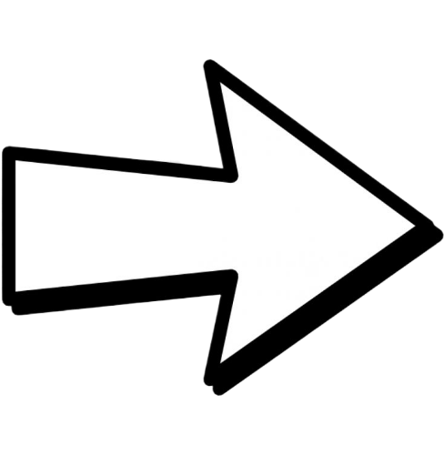
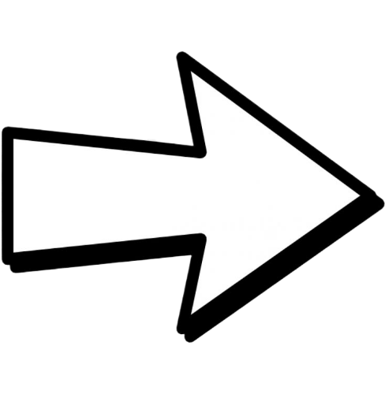
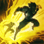
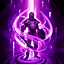
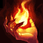

Irei colocar 3 combos de Aatrox aqui, 1 facil, 1 medio e 1 dificil
FACIL
 


Troque normalmente usando o Q e então no meio da animação do segundo Q use o E para acertar o ponto crítico
MÉDIO
Extenda sua troca usando o Q duas vezes e no terceiro e mais forte Q use o E para acertar o ponto crítico
DIFICIO


Esse combo é um pouco mais dificil mas não é impossivel. Depois de pegar o nivel 6 Use sua ult(R) para aumentar sua cura, dano e ficar mais rapido para chegar no range do Q, então instantaneamente aperte Q W E, dê um auto attack, dê o segundo Q para manter o inimigo no seu W, então finalize com outro auto attack e o ultimo Q
Aatrox é um campeão muito forte, principalmente por sua cura e sutain, mas early game, principalmente quando ele não tem sua habilidade ultimate o foco é ficar mais safe e focar farm
Enquanto você estiver focando na lane phase (irei falar sobre jajá) tente sempre ficar de olho no mapa para ganks e também para oportunidades de roaming para ajudar o jg para fazer vastilarvas ou arauto, ou ate mesmo ajudar o mid aliado
Tente logo no inicio do jogo wardar a jg inimida para ver por onde o jg inimigo começou, se nao der warde a jg alidaa ou espere ate os 2 minutos e pouco e warde o rio para assim você ficar mais seguro com ganks
Lane Phase
NIVEL 1-6
Até o nivel 6 eu recomendo você focar em farmar e principalmente freeze sua lane, isso vai fazer com que seja bem mais facil pro seu jg te gankar. So troque com o Q se tiver oportunidade e nao gaste o E, ele vai ser seu escape caso receba gank ou tenha que desviar de alguma skill inimiga
guarde seus feitiços de invocador para escapar (se tiver usando flash) e para voltar para a lane rapido com o TP lembre-se você não quer focar em matar ou ganhar lutas agora, e sim farmar e ficar safe
faça isso até conseguir pegar o nivel 6. No nivel 6 você vai ter sua ultimate e se jogou certinho e ficou safe vai conseguir ter metade do primeiro item já
MID GAME
Depois do nivel 6 Aatrox começa a ficar mais forte, sua ultimate aumenta o dano que você causa, aumenta a cura e velocidade de movimento.
Após o nivel 6 você pode começar a jogar mais agressivamente
NIVEL 6-14
Após você ter pego sua ultimate você pode começar a trocar com o inimigo, se você tiver jogando com o feitiço de invocador ignite você tera uma vantagem muito boa nas trocas
continue focando farm e se tiver forte e ja tiver pego alguma kill continue freezando para negar xp para seu adversario
você pode avançar a wave para torre do inimigo caso você mate ele, caso ele voltou base e nao tem TP, e se vc ver que estão lutando algum objetivo do lado oposto do mapa e você não tem como ajudar com um TP
LATE GAME
NIVEL 14-18
Nesse momento do jogo o seu foco é andar com o time, quase sempre, você so focara em splitar ou destruir alguma torre em casos muito especificos
Ajude seu time com objetivos, lute em todas as teamfights possiveis
Aatrox late game decai muito e nao causa mais tanto dano, porem o sustain dele continua sendo absurdo e isso vai fazer com que você consiga ajudar muito o seu time protegendo eles e fazendo focarem em você se posicionando na frente
Jogando de Aatrox você tem que ter a noção que com sua cura e sustain você vai ser o frontline do seu time, frontline significa que você vai ser o campeão que vai ficar na frente para proteger os outros players e principalmente proteger seu ADC que quase sempre será focado
EARLY GAME
Early game seu foco é ficar safe, farmar, ajudar seu jg em objetivos proximos e se possivel ajudar o mid com algum roaming(somente se tiver oportunidade)
MID GAME
Mid game ja muda um pouco as coisas, você tem que ficar sempre esperto com TP (se você tiver usando) para sempre que o bot precisar ou o seu time for lutar dragão você estar presente, é muito importante você estar presente em todas as lutas possiveis
(caso você não esteja com TP tente andar com o time e nao fique do lado oposto dos objetivos)
LATE GAME
Late game seu objetivo é puramente andar com o time, guarde o TP para contestar algum backdoor ou se vcs derem um ACE(matar todo o time adversario) dar TP para uma lane oposta para levar uma torre, mas o foco principalm é ficar com o seu time sempre
SPELLS
 O meta atual para Aatrox é usar Flash para ter um escape bom e Teleporte para chegar nos objetivos

Eu pessoalmente prefiro ir de Teleporte e Ignite, se você jogar certinho early você consegue item rapido e com ceu dividido você consegue um sustain otimo na lane, além de ter o dash do E e a ultimate para ajudarem em escapar, isso faz com que nao seja necessario o flash, e o ignite ajuda bastante na lane inclusive para cortar cura de campeões que abusam de cura. E o teleporte como sempre muito util para ajudar em objetivos no geral
ITEMIZAÇÃO
O meta atual fala uma build um pouco diferente para o Aatrox mas eu vou ta passando a minha build atual que é so um pouco diferente
Iniciais
Early game eu gosto sempre de ficar o maximo safe possivel, então eu começo geralmente com couraça de pano ou manto anula magia e uma poção refil (caso eu esteja contra alguem que tenha muito roubo de vida ou muita cura eu aço espada longa para ja fechar logo chamado do carrasco)
Se você tiver se perguntando porque eu não faço nenhum item de doran, é porque eu prefiro ter uma troca mais fraca no early e ficar safe do que perder o dinheiro de vender doran no late game, é mais uma escolha pessoal mesmo
Primeira Volta
Geralmente eu fecho na primeira volta o martelo de caulfield e botas, e se possivel compro uma pink, mas isso so se eu tiver muito bem na lane, geralmente gosto de rushar botas e depois começo a rushar o item principal
Botas
Botas é simples, se você tiver contra muito ad você faz a bota galvanizada de aço normal, mas se tiver muito AP ou muito campeão com CC eu prefiro fazer Passos de mercúrio
Core
Os itens core são Eclipse(gosto de rushar ele primeiro item caso eu esteja bem pois da um dano muito grande alem do escudo da passiva que ajuda muito) seguido de céu dividido depois da bota, céu dividido é um dos itens mais fortes no patch atual, o critico e a cura que ele da no auto attack depois de um tempo é totalmente broken. Gosto muito de shojin pois aumenta mais o potencial de dano, Sterak e Dança da morte são para dar um sustain maior, o escudo de Sterak é incrivel alem do AD passivo que ele dá, já dança da morte mitiga dano então é espetacular. O ultimo item do core é Anjo guardião que eu gosto de fechar antes se eu tiver MUITO FORTE MESMO, mas o ideal é so late game você vender bota e fazer GA (só se necessário)
Situacionais
Cutelo faço geralmente quando tem muito tank lá para quebrar armadura e malmortius eu faço se o time deles tiver muito AP ou um AP muito forte que ta me explodindo ou dando muito dano ao longo do tempo esses dois itens eu faço no lugar de Sterak caso for fazer
Serraspada eu faço se tiver muita cura ou roubo de vida la ou eu tiver contra um campeão que tem isso na lane, geralmente faço serraspada no lugar de Dança da Morte
RUNAS
Essa é a Runa que eu uso que também é a do meta, tentei usar com secundaria dominação um tempo mas essa é a melhor runa mesmo
Conquistador
A runa do Conquistador é muito boa principalmente paras trocas, ela faz com que você se cure mais e dê mais dano é indispensavel pro Aatrox, ela comba muito muito bem com ele
Triunfo
Triuno é otimo para te curar e além disso dar ouro a mais por abate, é uma runa muito boa
Lenda: Tenacidade
Essa ruan é outra indispensavel, ela da tenacidade. Tenacidade diminui o tempo de todo controle de grupo do jogo, e Aatrox sofre muito com qualquer tipo de CC, então essa runa é indispensavel
Até a morte
Outra runa muito boa, essa runa az com que você dê mais dano quanto menos vida você está, e como você é um frontline você sempre vai perder vida, você ter mais dano fará com que você se cure mais ficando mais tempo vivo e até mesmo conseguir algum abate
Arvore de Determinação
Osso Revestido: Essa runa é otima para se manter mais vivo, pois ao ser atacado os proximos 3 ataque que você receber darão menos dano
Revitalizar:Essa runa é otima para sustain também, aumentando a cura e escudo que você recebe, o que aumenta também a propria cura do Aatrox
Runas menores
Por ultimo nas runas menores eu gosto de colocar 2 de força adaptativa e a ultima de tenacidade para aumentar a resistencia a Controle de Grupo (CC)
COUNTERS
Principais Counter de Aatrox pelo menos para mim é Illaoi e Fiora recomendo sempre banir elas
Illaoi:Illaoi você tem que sempre tentar ao maximo desviar do E dela, que é a habilidade que puxa sua alma, e sempre que ela tiver ultimate tentar baitar a ult dela sem que ela puxe sua alma com o E
Fiora:Fiora você tem que ao maximo tentar não deixar ela acertar a passiva em você e também baitar o W dela o Ripostar, sem essa habilidade é muito facil trocar com ela